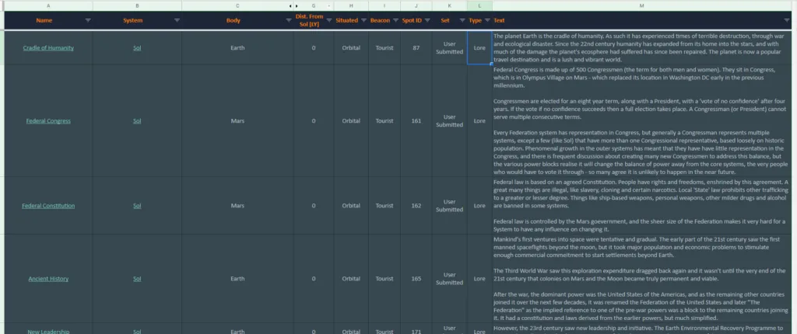

Tourist and Visitor Beacons can be discovered all across the galaxy, but they can mostly found within the human inhabited bubble. These beacons tell the stories of commanders, some no longer with us, as well as the history and lore of the Elite Dangerous universe, as well as marking beautiful sites to visit.
Canonn has put together the following spreadsheet to collect these beacons into one list, linking the EDSM page of the system: https://canonn.fyi/beacons.
The Canonn spreadsheet also includes an efficient route if you wish to visit all the beacons for yourself. You'll also see the spreadsheet is not yet complete. If you'd like to help flush it out feel free to join us in our Discord!

This spreadsheet exists with and supplements the wonderful existing Tourist Beacons spreadsheet by CMDR Lucienn.